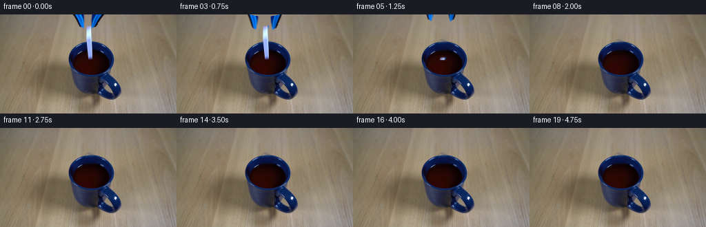
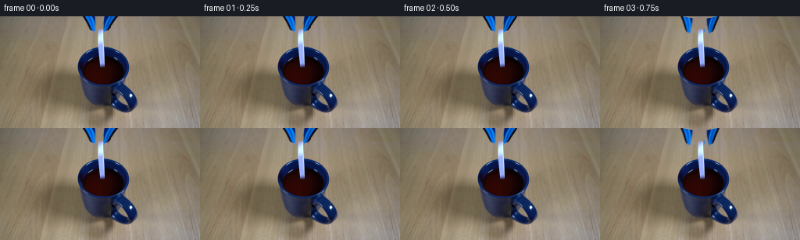
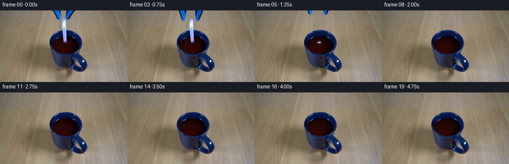
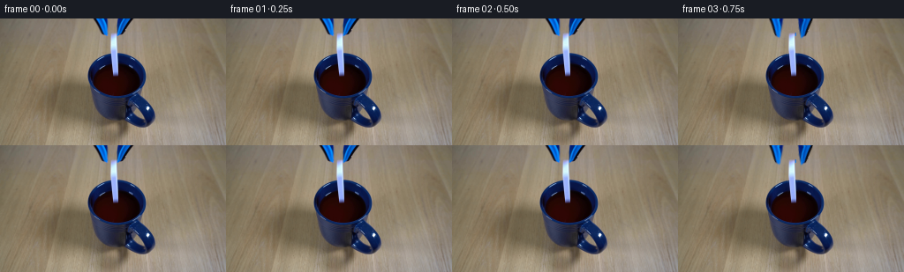

CODING AGENTS AS PIXEL WORLD MODELS
traex/GPT-6.1-Sol · 0047
点击播放 · 原生 RGB 像素
逐轮保存的候选
回放视频、检查图与代码变化。
每份候选均可单独播放。实际图片检查记录在下方工具轨迹中。
候选 01播放与检查图
点击播放 · 原生 RGB 像素


展开代码变化
--- 上一保存版本
+++ 本次保存版本
@@ -0,0 +1,181 @@
+from pathlib import Path
+import numpy as np
+from PIL import Image, ImageDraw, ImageFilter
+import cv2
+from scipy.ndimage import gaussian_filter, map_coordinates
+import artifact_io
+
+ROOT=Path(__file__).resolve().parent
+W,H=256,144
+SRC=np.array(Image.open(ROOT/'first_frame.png').convert('RGB'))
+Y,X=np.mgrid[:H,:W].astype(np.float32)
+
+def polygon(points, blur=0):
+ scale=4
+ im=Image.new('L',(W*scale,H*scale),0)
+ ImageDraw.Draw(im).polygon([(round(x*scale),round(y*scale)) for x,y in points],fill=255)
+ if blur: im=im.filter(ImageFilter.GaussianBlur(blur*scale))
+ return np.array(im.resize((W,H),Image.Resampling.LANCZOS)).astype(float)/255
+
+# The original wood grain and the untouched porcelain and handle stay fixed.
+left_poly=[(104.7,-2),(123.1,-2),(123.3,20),(120.7,20.4),(116.8,18.3),(105.2,1)]
+right_poly=[(131.5,-2),(150.4,-2),(146.7,5.7),(140.9,14),(137.4,18.8),(133,20.6),(131.6,19.7)]
+tile_poly=[(124.5,15.5),(133,15.5),(134.7,63),(134.5,66.6),(127.1,66.6),(126,47),(124.2,22)]
+ml=polygon(left_poly,.4); mr=polygon(right_poly,.4); mt=polygon(tile_poly,.4)
+remove=(ml+mr+mt>.02).astype(np.uint8)
+remove=cv2.dilate(remove,np.ones((3,3),np.uint8))
+plate=cv2.inpaint(SRC,remove*255,4,cv2.INPAINT_TELEA).astype(float)
+# Recover the continuous dark back lip and liquid beneath the narrow tile.
+# Linear continuation of local surface illumination, with matching small grain.
+rng=np.random.default_rng(59)
+for y in range(40,67):
+ L=SRC[y,121:125].astype(float).mean(axis=0)
+ R=SRC[y,136:140].astype(float).mean(axis=0)
+ for x in range(125,136):
+ s=(x-123)/14
+ v=L*(1-s)+R*s
+ plate[y,x]=v+rng.normal(0,.55,3)
+# Top edge of the oval is behind the removed ceramic.
+for y in (38,39):
+ for x in range(125,134):
+ plate[y,x]=plate[y,264-x]
+plate=np.clip(plate,0,255)
+Image.fromarray(plate.astype(np.uint8)).save(ROOT/'.tmp/clean_plate.png')
+
+# Photograph-derived transparent tool halves, preserving their blue ribs.
+def tool_sprite(region):
+ alpha=np.clip((plate[:,:,0]-SRC[:,:,0]) / np.maximum(plate[:,:,0],1),0,1)
+ alpha*=np.clip(region*1.5,0,1)
+ alpha[alpha<.012]=0
+ fg=(SRC.astype(float)-plate*(1-alpha[...,None]))/np.maximum(alpha[...,None],1e-5)
+ fg=np.clip(fg,0,255)
+ return fg,alpha
+lf,la=tool_sprite(ml); rf,ra=tool_sprite(mr)
+
+# The bluish cast of the white ceramic is from the nearby cobalt mug.
+# Its narrow face is inclined very slightly to the right.
+ta=np.zeros((H,W),float)
+for y in range(16,67):
+ for x in range(124,136):
+ if mt[y,x]>.001:
+ b=plate[y,x,2]
+ ta[y,x]=np.clip((float(SRC[y,x,2])-b)/max(253-b,25),0,1)
+ta*=np.clip(mt*3,0,1)
+tf=(SRC.astype(float)-plate*(1-ta[...,None]))/np.maximum(ta[...,None],1e-5)
+tf=np.clip(tf,0,255)
+
+
+def composite(dst,fg,alpha):
+ return dst*(1-alpha[...,None])+fg*alpha[...,None]
+
+def move_sprite(fg,alpha,mat):
+ a=cv2.warpAffine(alpha.astype(np.float32),mat,(W,H),flags=cv2.INTER_LINEAR,borderMode=cv2.BORDER_CONSTANT)
+ p=cv2.warpAffine((fg*alpha[...,None]).astype(np.float32),mat,(W,H),flags=cv2.INTER_LINEAR,borderMode=cv2.BORDER_CONSTANT)
+ c=p/np.maximum(a[...,None],1e-7)
+ return c,a
+
+# Surface ellipse, measured from the dark liquid's existing boundary.
+surface=((X-131.7)/25.25)**2+((Y-69.85)/17.25)**2
+water=np.clip((1.0-surface)*12,0,1)
+# Avoid altering the stationary ceramic wall and rim.
+water*=np.clip((Y-52.1)*1.3,0,1)
+
+
+def ripples(dst,age):
+ if age<0: return dst
+ # A short impact wave packet expands in the plane of the liquid.
+ dx=X-130.6; dy=(Y-65.6)/.61
+ radius=np.sqrt(dx*dx+dy*dy+.1)
+ spread=16.0*age
+ env=np.exp(-((radius-spread)/5.8)**2)*np.exp(-age/1.08)
+ phase=1.27*(radius-spread)
+ height=.72*env*np.sin(phase)
+ height+=.20*np.exp(-age/1.3)*np.sin(1.4*radius-6.5*age)*np.exp(-radius/35)
+ hy,hx=np.gradient(height)
+ # Image-space refraction is subtle, with soft warm highlights on the slopes.
+ sx=X+hx*1.2; sy=Y+hy*.5
+ displaced=np.stack([map_coordinates(plate[:,:,i],[sy,sx],order=1,mode='nearest') for i in range(3)],2)
+ slope=(-hx*.25-hy*.7)
+ light=12*slope+8*np.maximum(slope-.17,0)**2
+ color=np.array([1.,.66,.39])
+ wet=displaced+light[...,None]*color
+ # Contact cavity, quickly filled by the rebounding surface.
+ depression=np.exp(-((dx/4.5)**2+(dy/4.5)**2))*np.exp(-age*10)
+ wet*=1-depression[...,None]*.4
+ return composite(dst,np.clip(wet,0,255),water)
+
+
+def splash(dst,age):
+ if not 0<age<.88: return dst
+ # Small dark-liquid crown; no large explosion or foam.
+ S=4
+ im=Image.new('RGBA',(W*S,H*S),(0,0,0,0)); d=ImageDraw.Draw(im)
+ def line(points,color,width):
+ d.line([(int(x*S),int(y*S)) for x,y in points],fill=color,width=max(1,round(width*S)),joint='curve')
+ strength=np.exp(-((age-.20)/.18)**2)
+ if strength>.025:
+ rad=3.3+5*age
+ pts=[]
+ for q in np.linspace(0,2*np.pi,61):
+ c=np.cos(q); s=np.sin(q)
+ crown=(2.2+1.8*(.5+.5*np.sin(5*q+1)))*strength
+ pts.append((130.6+rad*c,65.6+.60*rad*s-crown))
+ line(pts,(72,37,20,int(170*strength)),.65)
+ line(pts[28:47],(145,96,53,int(130*strength)),.40)
+ for q in [0.2,1.2,2.25,3.55,4.7,5.6]:
+ bx=130.6+rad*np.cos(q); by=65.6+.6*rad*np.sin(q)
+ line([(bx,by),(bx+.65*np.cos(q),by-strength*(3.6+1.2*np.sin(q*3)))],(67,31,14,int(155*strength)),.5)
+ # Tiny droplets on ballistic trajectories, returning to the mug.
+ for vx,vy,delay,size in [(-9,-29,.025,.52),(10,-24,.015,.50),(-3,-35,.05,.62),(5,-32,.065,.46),(-14,-21,.04,.45),(15,-17,.035,.4)]:
+ t=age-delay
+ if t<0: continue
+ xx=130.6+vx*t; yy=65.4+vy*t+57*t*t
+ if yy>66.3 or t>.59:continue
+ alpha=int(210*min(1,t/.05))
+ d.ellipse(((xx-size)*S,(yy-size*1.25)*S,(xx+size)*S,(yy+size*1.25)*S),fill=(60,26,11,alpha))
+ d.ellipse(((xx-size*.35)*S,(yy-size*.55)*S,(xx+.10)*S,(yy-.1)*S),fill=(134,85,43,int(alpha*.55)))
+ a=np.array(im.resize((W,H),Image.Resampling.LANCZOS)).astype(float)
+ return composite(dst,a[:,:,:3],a[:,:,3]/255)
+
+
+def render(t):
+ if t==0:return SRC.copy()
+ release=.76
+ impact=.86
+ age=t-impact
+ out=plate.copy()
+ out=ripples(out,age)
+ # Hold, open jaws, then gravity drives the ceramic straight down.
+ tau=max(t-release,0)
+ if tau<.75:
+ fall=190*tau*tau
+ drift=.9*tau
+ theta=-1.8*tau
+ m=cv2.getRotationMatrix2D((130,39),theta,1)
+ m[0,2]+=drift; m[1,2]+=fall
+ f,a=move_sprite(tf,ta,m)
+ if tau>0:
+ # At the water plane the lower portion disappears under opaque liquid.
+ cutoff=65.6
+ a*=np.clip((cutoff+.65-Y)/1.3,0,1)
+ out=composite(out,f,a)
+ out=splash(out,age)
+ opening=np.clip((t-.50)/.34,0,1)
+ opening=opening*opening*(3-2*opening)
+ raiseup=39*np.clip((t-.94)/.80,0,1)**1.2
+ for fg,a,pivot,ang in [(lf,la,(106,-15),-13*opening),(rf,ra,(149,-15),13*opening)]:
+ m=cv2.getRotationMatrix2D(pivot,ang,1)
+ m[1,2]-=raiseup
+ f,aa=move_sprite(fg,a,m)
+ out=composite(out,f,aa)
+ # Preserve the exact initial photograph until jaw motion actually begins.
+ if t<.50:return SRC.copy()
+ return np.clip(out,0,255).round().astype(np.uint8)
+
+
+def main():
+ frames=np.stack([render(i/4) for i in range(20)])
+ frames[0]=SRC
+ artifact_io.save(frames,ROOT)
+
+if __name__=='__main__':main()
候选 02播放与检查图
点击播放 · 原生 RGB 像素


展开代码变化
--- 上一保存版本
+++ 本次保存版本
@@ -35,10 +35,16 @@
s=(x-123)/14
v=L*(1-s)+R*s
plate[y,x]=v+rng.normal(0,.55,3)
-# Top edge of the oval is behind the removed ceramic.
-for y in (38,39):
- for x in range(125,134):
- plate[y,x]=plate[y,264-x]
+# Wood immediately above the oval must not retain an inpainted halo.
+for y in range(33,39):
+ for x in range(124,136):
+ s=(x-122)/14
+ plate[y,x]=SRC[y,122]*(1-s)+SRC[y,136]*s+rng.normal(0,.65,3)
+# Complete the shallow rear edge using the visible symmetric right arc.
+for x in range(124,134):
+ sx=max(134.,263.8-x)
+ j=int(sx); q=sx-j
+ plate[39,x]=SRC[39,j]*(1-q)+SRC[39,j+1]*q
plate=np.clip(plate,0,255)
Image.fromarray(plate.astype(np.uint8)).save(ROOT/'.tmp/clean_plate.png')
@@ -69,8 +75,15 @@
return dst*(1-alpha[...,None])+fg*alpha[...,None]
def move_sprite(fg,alpha,mat):
- a=cv2.warpAffine(alpha.astype(np.float32),mat,(W,H),flags=cv2.INTER_LINEAR,borderMode=cv2.BORDER_CONSTANT)
- p=cv2.warpAffine((fg*alpha[...,None]).astype(np.float32),mat,(W,H),flags=cv2.INTER_LINEAR,borderMode=cv2.BORDER_CONSTANT)
+ # The tool continues above the photograph, rather than having an artificial
+ # cut edge that would become visible when its jaws rotate open.
+ pad=40
+ aa=np.pad(alpha,((pad,0),(0,0)),mode='edge')
+ pp=np.pad(fg*alpha[...,None],((pad,0),(0,0),(0,0)),mode='edge')
+ m=mat.copy()
+ m[:,2]-=mat[:,1]*pad
+ a=cv2.warpAffine(aa.astype(np.float32),m,(W,H),flags=cv2.INTER_LINEAR,borderMode=cv2.BORDER_CONSTANT)
+ p=cv2.warpAffine(pp.astype(np.float32),m,(W,H),flags=cv2.INTER_LINEAR,borderMode=cv2.BORDER_CONSTANT)
c=p/np.maximum(a[...,None],1e-7)
return c,a
@@ -96,7 +109,7 @@
sx=X+hx*1.2; sy=Y+hy*.5
displaced=np.stack([map_coordinates(plate[:,:,i],[sy,sx],order=1,mode='nearest') for i in range(3)],2)
slope=(-hx*.25-hy*.7)
- light=12*slope+8*np.maximum(slope-.17,0)**2
+ light=29*slope+22*np.maximum(slope-.17,0)**2
color=np.array([1.,.66,.39])
wet=displaced+light[...,None]*color
# Contact cavity, quickly filled by the rebounding surface.
@@ -141,7 +154,7 @@
def render(t):
if t==0:return SRC.copy()
release=.76
- impact=.86
+ impact=.90
age=t-impact
out=plate.copy()
out=ripples(out,age)
@@ -169,7 +182,7 @@
f,aa=move_sprite(fg,a,m)
out=composite(out,f,aa)
# Preserve the exact initial photograph until jaw motion actually begins.
- if t<.50:return SRC.copy()
+ if t<=.50:return SRC.copy()
return np.clip(out,0,255).round().astype(np.uint8)
可观测工具轨迹
实际执行的命令与返回图片。
命令 1exit 0
/bin/bash -lc 'ls -la && cat prompt.txt && cat GENERATION_RULES.md'
命令 2exit 0
/bin/bash -lc "cat artifact_io.py && python - <<'PY'
from PIL import Image
import numpy as np
im=np.array(Image.open('first_frame.png'))
print(im.shape)
# quantize downsample to ascii color labels
im=Image.fromarray(im).resize((96,54))
a=np.array(im)
# nearest named color
colors={' ':'999','w':(238,236,227),'K':(25,25,23),'D':(67,66,59),'g':(124,124,114),'l':(180,181,168),'b':(31,67,96),'B':(65,109,145),'t':(148,112,80),'T':(185,145,99),'s':(111,82,55)}
colors.pop(' ')
names=list(colors); c=np.array(list(colors.values()))
d=((a[:,:,None,:].astype(float)-c)**2).sum(3).argmin(2)
for row in d: print(''.join(names[v] for v in row))
PY"命令 3exit 0
/bin/bash -lc "python - <<'PY'
from PIL import Image
import numpy as np
a=np.array(Image.open('first_frame.png'))
# top region enlarged ascii luminance
b=a[:96,85:182]
g=b.mean(2)
chars=' .,:;irsXA253hMHGS#9B&@'
print('top grayscale x85-181 rows0-95')
for y in range(0,96): print('%2d '%y+''.join(chars[int(v*len(chars)/256)] for v in g[y]))
print('RGB samples around claw/tile')
for y in [0,4,8,12,16,18,20,24,28,32,36,40,44,48,52,56,60,64,68,72,80,88,96,104,112,120]:
print(y, [(x,tuple(a[y,x])) for x in range(96,153,4)])
PY"命令 4exit 0
/bin/bash -lc "python - <<'PY'
from PIL import Image
import numpy as np
a=np.array(Image.open('first_frame.png')).astype(int)
print('object labels x98..157: wood=blank navy=d blue=B bright=W blend=m')
for y in range(0,69):
s=''
for x in range(98,158):
r,g,b=a[y,x];
if r>135 and b>r+15: c='W'
elif b>r+45 and g>45: c='B'
elif (b>r+14 and r<120) or max(r,g,b)<70: c='d'
elif r>g+6 and g>b+6 and r>90: c=' '
else:c='m'
s+=c
print(f'{y:2} '+s)
PY"命令 5exit 0
/bin/bash -lc "python - <<'PY'
from PIL import Image
import numpy as np
a=np.array(Image.open('first_frame.png')).astype(int)
for y in range(14,67):
print(y, ['%d:%d,%d,%d'%(x,*a[y,x]) for x in range(122,137)])
PY"命令 6exit 0
/bin/bash -lc "python - <<'PY' import importlib.util for m in ['cv2','scipy','PIL','numpy']: print(m, bool(importlib.util.find_spec(m))) PY"
命令 7exit 0
/bin/bash -lc "cat > .tmp/analyze.py <<'PY'
import numpy as np
from PIL import Image
A=np.array(Image.open('first_frame.png')).astype(float)
for y in range(36,91,2):
s=''
for x in range(94,174):
r,g,b=A[y,x]
if r>g*1.5 and r>b*1.5 and g<25: c='~'
elif b>r+20: c='b'
elif r>90 and r>g and g>b: c=' '
else:c='.'
s+=c
print(y,s)
PY
python .tmp/analyze.py"命令 8exit 0
/bin/bash -lc "cat > generate.py <<'PY'
from pathlib import Path
import numpy as np
from PIL import Image, ImageDraw, ImageFilter
import cv2
from scipy.ndimage import gaussian_filter, map_coordinates
import artifact_io
ROOT=Path(__file__).resolve().parent
W,H=256,144
SRC=np.array(Image.open(ROOT/'first_frame.png').convert('RGB'))
Y,X=np.mgrid[:H,:W].astype(np.float32)
def polygon(points, blur=0):
scale=4
im=Image.new('L',(W*scale,H*scale),0)
ImageDraw.Draw(im).polygon([(round(x*scale),round(y*scale)) for x,y in points],fill=255)
if blur: im=im.filter(ImageFilter.GaussianBlur(blur*scale))
return np.array(im.resize((W,H),Image.Resampling.LANCZOS)).astype(float)/255
# The original wood grain and the untouched porcelain and handle stay fixed.
left_poly=[(104.7,-2),(123.1,-2),(123.3,20),(120.7,20.4),(116.8,18.3),(105.2,1)]
right_poly=[(131.5,-2),(150.4,-2),(146.7,5.7),(140.9,14),(137.4,18.8),(133,20.6),(131.6,19.7)]
tile_poly=[(124.5,15.5),(133,15.5),(134.7,63),(134.5,66.6),(127.1,66.6),(126,47),(124.2,22)]
ml=polygon(left_poly,.4); mr=polygon(right_poly,.4); mt=polygon(tile_poly,.4)
remove=(ml+mr+mt>.02).astype(np.uint8)
remove=cv2.dilate(remove,np.ones((3,3),np.uint8))
plate=cv2.inpaint(SRC,remove*255,4,cv2.INPAINT_TELEA).astype(float)
# Recover the continuous dark back lip and liquid beneath the narrow tile.
# Linear continuation of local surface illumination, with matching small grain.
rng=np.random.default_rng(59)
for y in range(40,67):
L=SRC[y,121:125].astype(float).mean(axis=0)
R=SRC[y,136:140].astype(float).mean(axis=0)
for x in range(125,136):
s=(x-123)/14
v=L*(1-s)+R*s
plate[y,x]=v+rng.normal(0,.55,3)
# Top edge of the oval is behind the removed ceramic.
for y in (38,39):
for x in range(125,134):
plate[y,x]=plate[y,264-x]
plate=np.clip(plate,0,255)
Image.fromarray(plate.astype(np.uint8)).save(ROOT/'.tmp/clean_plate.png')
# Photograph-derived transparent tool halves, preserving their blue ribs.
def tool_sprite(region):
alpha=np.clip((plate[:,:,0]-SRC[:,:,0]) / np.maximum(plate[:,:,0],1),0,1)
alpha*=np.clip(region*1.5,0,1)
alpha[alpha<.012]=0
fg=(SRC.astype(float)-plate*(1-alpha[...,None]))/np.maximum(alpha[...,None],1e-5)
fg=np.clip(fg,0,255)
return fg,alpha
lf,la=tool_sprite(ml); rf,ra=tool_sprite(mr)
# The bluish cast of the white ceramic is from the nearby cobalt mug.
# Its narrow face is inclined very slightly to the right.
ta=np.zeros((H,W),float)
for y in range(16,67):
for x in range(124,136):
if mt[y,x]>.001:
b=plate[y,x,2]
ta[y,x]=np.clip((float(SRC[y,x,2])-b)/max(253-b,25),0,1)
ta*=np.clip(mt*3,0,1)
tf=(SRC.astype(float)-plate*(1-ta[...,None]))/np.maximum(ta[...,None],1e-5)
tf=np.clip(tf,0,255)
def composite(dst,fg,alpha):
return dst*(1-alpha[...,None])+fg*alpha[...,None]
def move_sprite(fg,alpha,mat):
a=cv2.warpAffine(alpha.astype(np.float32),mat,(W,H),flags=cv2.INTER_LINEAR,borderMode=cv2.BORDER_CONSTANT)
p=cv2.warpAffine((fg*alpha[...,None]).astype(np.float32),mat,(W,H),flags=cv2.INTER_LINEAR,borderMode=cv2.BORDER_CONSTANT)
c=p/np.maximum(a[...,None],1e-7)
return c,a
# Surface ellipse, measured from the dark liquid's existing boundary.
surface=((X-131.7)/25.25)**2+((Y-69.85)/17.25)**2
water=np.clip((1.0-surface)*12,0,1)
# Avoid altering the stationary ceramic wall and rim.
water*=np.clip((Y-52.1)*1.3,0,1)
def ripples(dst,age):
if age<0: return dst
# A short impact wave packet expands in the plane of the liquid.
dx=X-130.6; dy=(Y-65.6)/.61
radius=np.sqrt(dx*dx+dy*dy+.1)
spread=16.0*age
env=np.exp(-((radius-spread)/5.8)**2)*np.exp(-age/1.08)
phase=1.27*(radius-spread)
height=.72*env*np.sin(phase)
height+=.20*np.exp(-age/1.3)*np.sin(1.4*radius-6.5*age)*np.exp(-radius/35)
hy,hx=np.gradient(height)
# Image-space refraction is subtle, with soft warm highlights on the slopes.
sx=X+hx*1.2; sy=Y+hy*.5
displaced=np.stack([map_coordinates(plate[:,:,i],[sy,sx],order=1,mode='nearest') for i in range(3)],2)
slope=(-hx*.25-hy*.7)
light=12*slope+8*np.maximum(slope-.17,0)**2
color=np.array([1.,.66,.39])
wet=displaced+light[...,None]*color
# Contact cavity, quickly filled by the rebounding surface.
depression=np.exp(-((dx/4.5)**2+(dy/4.5)**2))*np.exp(-age*10)
wet*=1-depression[...,None]*.4
return composite(dst,np.clip(wet,0,255),water)
def splash(dst,age):
if not 0<age<.88: return dst
# Small dark-liquid crown; no large explosion or foam.
S=4
im=Image.new('RGBA',(W*S,H*S),(0,0,0,0)); d=ImageDraw.Draw(im)
def line(points,color,width):
d.line([(int(x*S),int(y*S)) for x,y in points],fill=color,width=max(1,round(width*S)),joint='curve')
strength=np.exp(-((age-.20)/.18)**2)
if strength>.025:
rad=3.3+5*age
pts=[]
for q in np.linspace(0,2*np.pi,61):
c=np.cos(q); s=np.sin(q)
crown=(2.2+1.8*(.5+.5*np.sin(5*q+1)))*strength
pts.append((130.6+rad*c,65.6+.60*rad*s-crown))
line(pts,(72,37,20,int(170*strength)),.65)
line(pts[28:47],(145,96,53,int(130*strength)),.40)
for q in [0.2,1.2,2.25,3.55,4.7,5.6]:
bx=130.6+rad*np.cos(q); by=65.6+.6*rad*np.sin(q)
line([(bx,by),(bx+.65*np.cos(q),by-strength*(3.6+1.2*np.sin(q*3)))],(67,31,14,int(155*strength)),.5)
# Tiny droplets on ballistic trajectories, returning to the mug.
for vx,vy,delay,size in [(-9,-29,.025,.52),(10,-24,.015,.50),(-3,-35,.05,.62),(5,-32,.065,.46),(-14,-21,.04,.45),(15,-17,.035,.4)]:
t=age-delay
if t<0: continue
xx=130.6+vx*t; yy=65.4+vy*t+57*t*t
if yy>66.3 or t>.59:continue
alpha=int(210*min(1,t/.05))
d.ellipse(((xx-size)*S,(yy-size*1.25)*S,(xx+size)*S,(yy+size*1.25)*S),fill=(60,26,11,alpha))
d.ellipse(((xx-size*.35)*S,(yy-size*.55)*S,(xx+.10)*S,(yy-.1)*S),fill=(134,85,43,int(alpha*.55)))
a=np.array(im.resize((W,H),Image.Resampling.LANCZOS)).astype(float)
return composite(dst,a[:,:,:3],a[:,:,3]/255)
def render(t):
if t==0:return SRC.copy()
release=.76
impact=.86
age=t-impact
out=plate.copy()
out=ripples(out,age)
# Hold, open jaws, then gravity drives the ceramic straight down.
tau=max(t-release,0)
if tau<.75:
fall=190*tau*tau
drift=.9*tau
theta=-1.8*tau
m=cv2.getRotationMatrix2D((130,39),theta,1)
m[0,2]+=drift; m[1,2]+=fall
f,a=move_sprite(tf,ta,m)
if tau>0:
# At the water plane the lower portion disappears under opaque liquid.
cutoff=65.6
a*=np.clip((cutoff+.65-Y)/1.3,0,1)
out=composite(out,f,a)
out=splash(out,age)
opening=np.clip((t-.50)/.34,0,1)
opening=opening*opening*(3-2*opening)
raiseup=39*np.clip((t-.94)/.80,0,1)**1.2
for fg,a,pivot,ang in [(lf,la,(106,-15),-13*opening),(rf,ra,(149,-15),13*opening)]:
m=cv2.getRotationMatrix2D(pivot,ang,1)
m[1,2]-=raiseup
f,aa=move_sprite(fg,a,m)
out=composite(out,f,aa)
# Preserve the exact initial photograph until jaw motion actually begins.
if t<.50:return SRC.copy()
return np.clip(out,0,255).round().astype(np.uint8)
def main():
frames=np.stack([render(i/4) for i in range(20)])
frames[0]=SRC
artifact_io.save(frames,ROOT)
if __name__=='__main__':main()
PY
python generate.py"命令 9exit 0
/bin/bash -lc "python - <<'PY'
import generate as g
import numpy as np
from PIL import Image
for t in [.5,.75,1,1.25,1.5,2,4.75]:
a=g.render(t).astype(int); src=g.SRC.astype(int)
diff=np.abs(a-src)
print(t, 'changed',np.sum(diff.max(2)>10),'mean',diff.mean(),'outside', diff[:, :95].max(), 'tile rows RGB',[tuple(a[y,130]) for y in (18,30,45,60,64)])
# clean plate x103..157 y35..90 grayscale
A=g.plate
print('plate color labels')
for y in range(14,70):
s=''
for x in range(100,156):
r,gg,b=A[y,x]
if r>135 and b>r+15:c='W'
elif b>r+45 and gg>45:c='B'
elif (b>r+14 and r<120) or max(r,gg,b)<70:c='d'
elif r>gg+6 and gg>b+6 and r>90:c=' '
else:c='m'
s+=c
print(y,s)
PY"命令 10exit 0
/bin/bash -lc "python - <<'PY' import generate as g for y in [0,10,16,20,30,35,36,37,38,39,40,41,42,50,55,60,65]: print(y,[(x,tuple(g.plate[y,x].round().astype(int)))for x in range(121,140)]) PY"
命令 11exit 0
/bin/bash -lc "python - <<'PY'
from PIL import Image
import numpy as np
a=np.array(Image.open('first_frame.png'))
for y in range(35,42):
print(y, ' '.join(f'{x}={tuple(a[y,x])}' for x in [119,120,121,122,123,124,125,133,134,135,136,137,138,139,140,141,142]))
PY"命令 12exit 0
/bin/bash -lc "python - <<'PY' import generate as g import numpy as np for age in [.1,.25,.5,.75,1.,1.5,2]: a=g.ripples(g.plate.copy(),age) d=np.abs(a-g.plate).max(2) print(age,d.max(), (d>2).sum(),(d>5).sum()) PY"
命令 13exit 0
/bin/bash -lc "python generate.py && python - <<'PY'
from pathlib import Path
from PIL import Image
import numpy as np
src=np.array(Image.open('first_frame.png'))
f=np.stack([np.array(Image.open(p)) for p in sorted(Path('frames').glob('*.png'))])
assert f.shape==(20,144,256,3) and f.dtype==np.uint8
assert np.array_equal(f[0],src)
print('Validated:',f.shape,f.dtype,'frame 00 identical')
print('Artifacts:',[(p.name,p.stat().st_size)for p in [Path('pixels.npz'),Path('index.html'),Path('inspection.png')]])
PY"保存候选 2 份；完成命令 13 次；可验证图片返回 0 张。原始 API 响应与完整日志保留在本地。